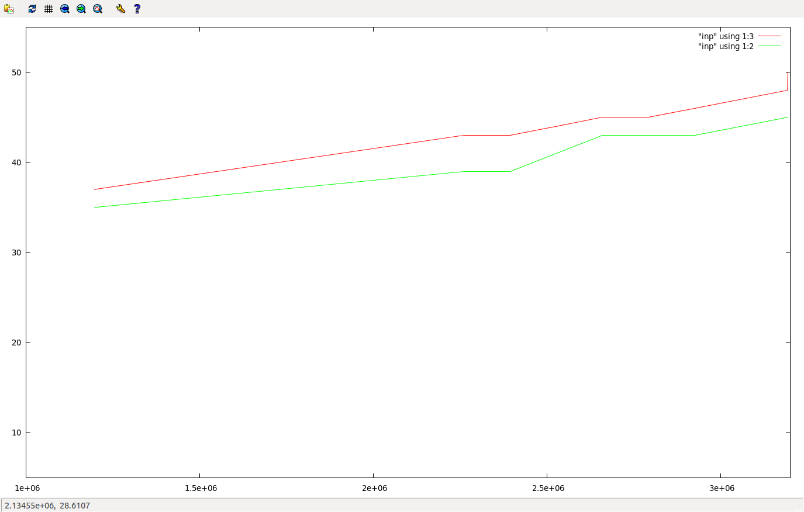
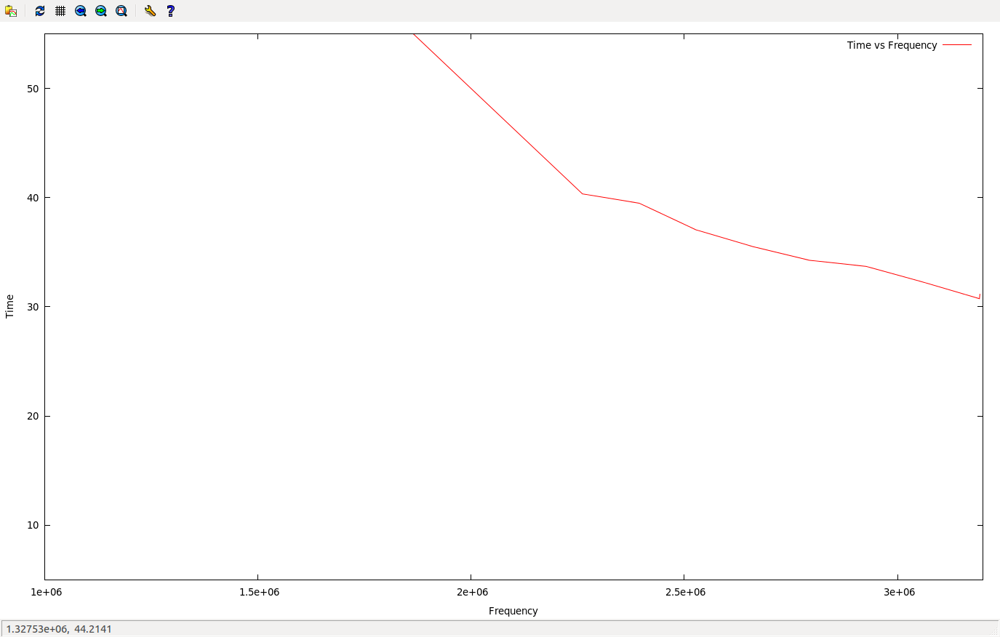
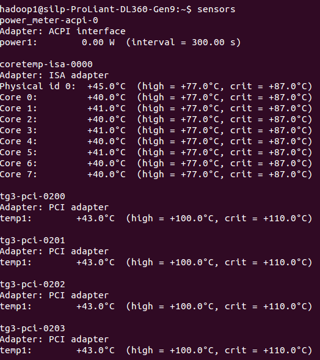
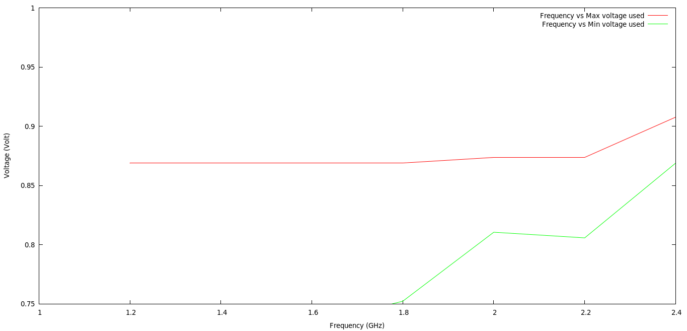

How To Change The CPU Frequency?
Installation
sudo apt-get install cpufrequtils
Running
Save the below in a set_freq.sh file
sudo cpufreq-set -c0 -g userspace
sudo cpufreq-set -c1 -g userspace
sudo cpufreq-set -c2 -g userspace
sudo cpufreq-set -c3 -g userspace
sudo cpufreq-set -c0 -f $1GHz
sudo cpufreq-set -c1 -f $1GHz
sudo cpufreq-set -c2 -f $1GHz
sudo cpufreq-set -c3 -f $1GHz
cat /sys/devices/system/cpu/cpu0/cpufreq/scaling_cur_freq
cat /sys/devices/system/cpu/cpu1/cpufreq/scaling_cur_freq
cat /sys/devices/system/cpu/cpu2/cpufreq/scaling_cur_freq
cat /sys/devices/system/cpu/cpu3/cpufreq/scaling_cur_freq
Now execute
chmod +x set_freq.sh
To change the frequncy exeucute the below command
./set_freq.sh 2.2
The available freqencies can be found by
more cat /sys/devices/system/cpu/cpu0/cpufreq/scaling_available_frequencies
Running Benchmarks
We used Lulesh benchmark for studying the change in temperature and execution time with change in frequency
Results
| Frequency | Temp Core 1 ℃ | Temp Core ℃ | Execution Time in Seconds |
|---|---|---|---|
| 1197000 | 35 | 37 | 79.65 |
| 2261000 | 39 | 43 | 40.34 |
| 2394000 | 39 | 43 | 39.49 |
| 2527000 | 41 | 44 | 37.05 |
| 2660000 | 43 | 45 | 35.52 |
| 2793000 | 43 | 45 | 34.26 |
| 2926000 | 43 | 46 | 33.70 |
| 3059000 | 44 | 47 | 32.27 |
| 3192000 | 45 | 48 | 30.74 |
| 3193000 | 45 | 50 | 31.15 |
Frequency vs Tempararture Graph

Frequency vs Time Graph

Temparature reading in HPC Computer

How to read CPU voltage for 64 bit computer
sudo apt-get install msr-tools
sudo modprobe msr
sudo rdmsr 408 --bitfield 47:32 --decimal --processor 0The value of register 408(x198) can be used to calculate the value of voltage. The value obtained from 32:47 bits on multiplying with (1 / 2^^13) gives the voltage.
Comparison of Frequency Vs Voltage
| Max Frequency | Max Voltage | Min Voltage |
|---|---|---|
| 1.2 GHz | 0.86890 Volt | 0.70386 Volt |
| 1.4 GHz | 0.86890 Volt | 0.71838 Volt |
| 1.6 GHz | 0.86890 Volt | 0.73291 Volt |
| 1.8 GHz | 0.86890 Volt | 0.75232 Volt |
| 2.0 GHz | 0.87366 Volt | 0.81055 Volt |
| 2.2 GHz | 0.87366 Volt | 0.80579 Volt |
| 2.4 GHz | 0.90771 Volt | 0.86890 Volt |
Graph

Time for Various Programs
| Program | Userspace Time | Ondemand Time |
|---|---|---|
| Compress 10gb file | 01:55 Min | 01:20 Min |
| Lulesh2.0 | 48.41 Sec | 42.99 Sec |
| Convert File To Pdf - LibreOffice | 6.41 Sec | 4.30 Sec |
| Copy 1 GB | 16.128 Sec | 17.356 Sec |
Comparison of Governors
Time
| Program | Ondemand | Conservative | Powersave | Performance | Rounder @ 1 | Rounder @ 2 | Rounder @ 5 |
|---|---|---|---|---|---|---|---|
| Lulesh @ 30 | 29.76 | 31.35 | 74.26 | 30.89 | 43.21 | 41.91 | 43.46 |
| Lulesh @ 35 | 56.16 | 56.80 | 132.25 | 57.02 | 79.10 | 82.87 | 77.30 |
| Lulesh @ 40 | 97.24 | 96.40 | 215.02 | 95.29 | 136.79 | 128.67 | 132.02 |
| Lulesh @ 45 | 159.65 | 175.90 | 359.83 | 157.57 | 217.00 | 225.11 | 209.52 |
Max Temparatue
| Program | Ondemand | Conservative | Powersave | Performance | Rounder @ 1 | Rounder @ 2 | Rounder @ 5 |
|---|---|---|---|---|---|---|---|
| Lulesh @ 30 | 58,57 | 56,55 | 44,43 | 56,55 | 55,53 | 56,55 | 55,53 |
| Lulesh @ 35 | 58,56 | 58,56 | 45,44 | 57,56 | 56,55 | 56,55 | 55,53 |
| Lulesh @ 40 | 60,58 | 60,59 | 45,44 | 59,57 | 57,56 | 58,56 | 57,54 |
| Lulesh @ 45 | 59, 57 | 60,57 | 44,42 | 63,57 | 57,55 | 57,55 | 58,56 |
Min Temparatue
| Program | Ondemand | Conservative | Powersave | Performance | Rounder @ 1 | Rounder @ 2 | Rounder @ 5 |
|---|---|---|---|---|---|---|---|
| Lulesh @ 30 | 44,43 | 39,40 | 40,40 | 42,42 | 41, 41 | 41,39 | 39,38 |
| Lulesh @ 35 | 41,40 | 39,39 | 39,39 | 44,42 | 39, 39 | 40,39 | 41,39 |
| Lulesh @ 40 | 41,41 | 41,40 | 39,39 | 47,45 | 40, 40 | 41,40 | 42,40 |
| Lulesh @ 45 | 37, 36 | 39,37 | 38,37 | 43,40 | 42, 40 | 40,39 | 41,39 |
Average Temparature
| Program | Ondemand | Conservative | Powersave | Performance | Rounder @ 1 | Rounder @ 2 | Rounder @5 |
|---|---|---|---|---|---|---|---|
| Lulesh @ 30 | 56.63,55.35 | 54.11, 52.81 | 42.53, 41.92 | 53.53,52.67 | 49.68, 48.22 | 49.22,47.97 | 49.03,46.55 |
| Lulesh @ 35 | 55.32,53.96 | 55.01, 53.62 | 43.46,42.32 | 55.37,53.79 | 49.57, 48.52 | 50.04,48.94 | 48.36,46.01 |
| Lulesh @ 40 | 57.01,55.38 | 57.09, 55.80 | 43.71,42.67 | 56.63,55.08 | 50.79, 49.79 | 51.21,50.01 | 50.05,47.76 |
| Lulesh @ 45 | 55.51,52.91 | 56.34, 53.82 | 43.08, 40.57 | 56.72,53.75 | 50.65, 48.16 | 50.99,48.60 | 50.68,48.57 |